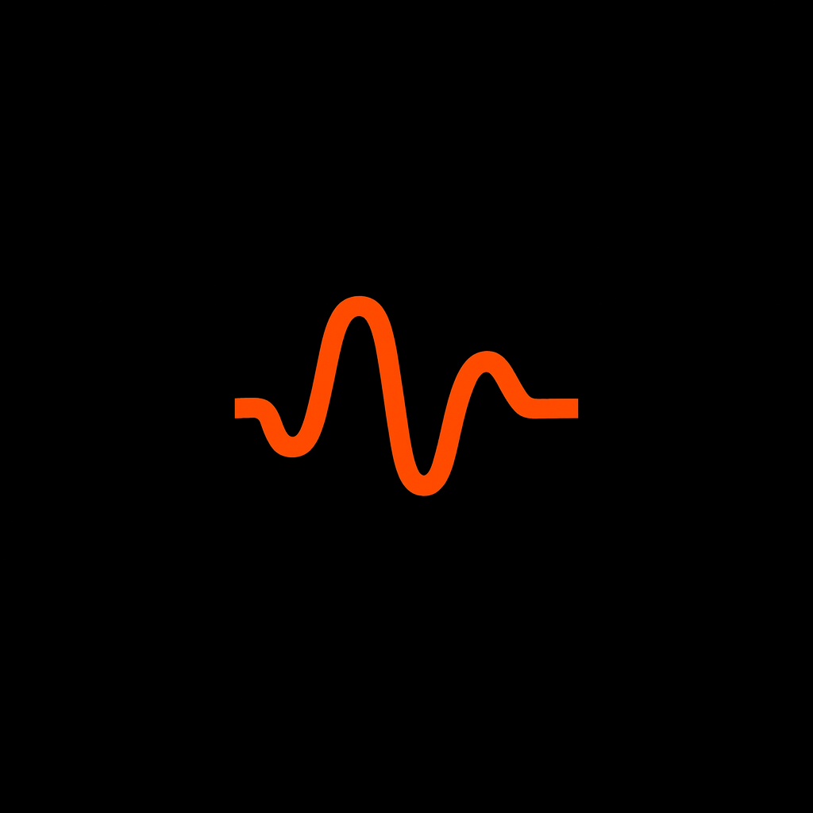

This page separates what is published on PyPI, what is released on GitHub, and what has only merged in source. Runtime integrations should use the published package set unless a release note explicitly documents another validated artifact.
| Layer | Component | Current public surface | Compatibility / notes |
|---|---|---|---|
| Governance | Waveframe Ledger | PyPI / GitHub 0.9.0pip install governance-ledger==0.9.0 | Catalog 3 adds independently approved create/modify authority, action-scoped roles and selectors, and fresh approval. The optional [guard] extra declares Guard >=0.19.0,<0.20.0. |
| Compilation | CRI-CORE Contract Compiler | PyPI / GitHub 0.5.0pip install cricore-contract-compiler==0.5.0 | Adds compile_action_policy for independent create/modify roles and allow/deny selectors. The existing cricore-compile-policy CLI remains legacy-only and rejects action-policy payloads. |
| Proposal | Proposal Normalizer | 0.2.0pip install cricore-proposal-normalizer==0.2.0 | Guard 0.18.0 declares >=0.2.0,<0.3.0. |
| Kernel | CRI-CORE | PyPI 0.13.0 GitHub v0.14.0; PyPI pending | Guard 0.18.0 declares >=0.13.0,<0.15.0. v0.14.0 changes public evaluation to strict-by-default; advisory evaluation requires explicit mode="local". |
| Runtime | Waveframe Guard | PyPI / GitHub 0.19.0pip install waveframe-guard==0.19.0 | Catalog-3 repository execution supports governed file creation and modification with separate action authority. repository_tool remains the mediated repository boundary; historical modify grants never imply create permission. |
| Authority / evidence | Waveframe Cloud | Release v0.6.0 | Published 2026-09-22 with native Ledger v4 create/modify publication, guided runtime connection, and preserved execution evidence. Production activation remains a separate blocked handoff; the release is not evidence of a completed hosted cutover. |
The shortest current public path is:
pip install "waveframe-guard==0.19.0"
For an explicitly pinned reproducible environment:
pip install "waveframe-guard==0.19.0" "governance-ledger==0.9.0" "cricore==0.13.0" "cricore-contract-compiler==0.5.0" "cricore-proposal-normalizer==0.2.0"
CRI-CORE v0.14.0 remains a GitHub release rather than the ordinary PyPI baseline. Guard 0.19.0 accepts cricore>=0.13.0,<0.15.0; ordinary index installation therefore continues to resolve CRI 0.13.0.
repository_tool and its bound repository target.strict or local; configuration conflicts reject before policy evaluation.Guard 0.19.0 wheel
sha256:e734836af5780fff7f834e2904c67f88a1d3a5ef1b47a2e8fc2f4e07f3dbb42f
Ledger 0.9.0 wheel
sha256:6b7913e4ba4e2b11d1007bb3006dea81cde08ebc06980a7bab89113938779bd4
Contract Compiler 0.5.0 wheel
sha256:1bc689d2885e32641ac3ade7e710a4d0fe079c089f1a2160e2d86f328bbb7c44
CRI-CORE 0.14.0 GitHub wheel (not yet the PyPI baseline)
sha256:11a22b4fb15137a0e535b8dd71bf927260800559221f0e10512029d59fb18702